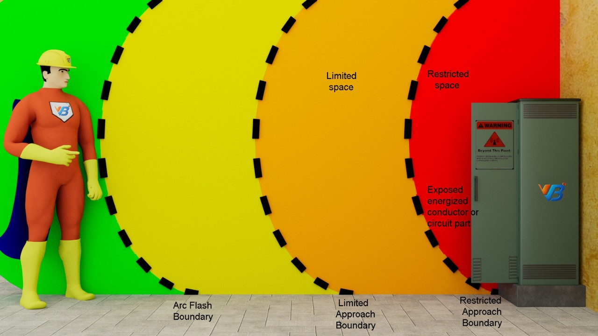
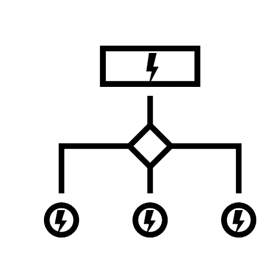
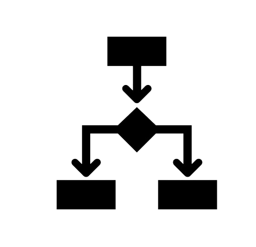
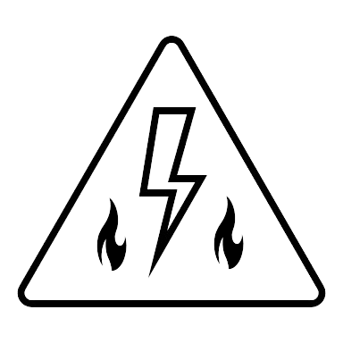
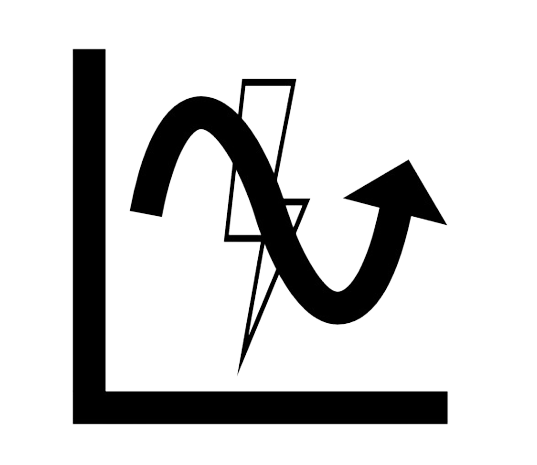
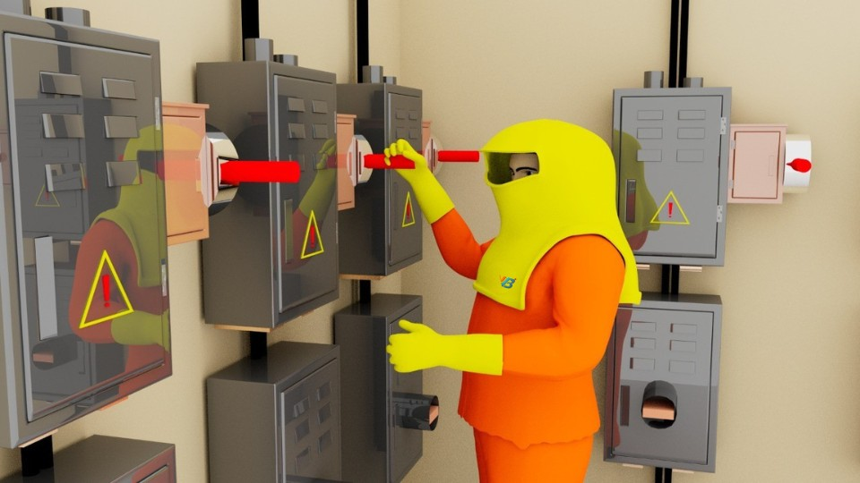

Our offerings


S L D Preparation
A single-line diagram (SLD) is a high-level schematic diagram showing how incoming power is distributed to the equipment. It is the blueprint for ...
Read More
Load Flow Studies
Conducting load flow studies is an important requirement for the operations. The load flow analysis is an important part of the power system ....
Read More
Short Circuit Studies
Short circuit study is the process of analyzing an electrical system to determine the magnitude of fault currents that flows during ...
Read MoreProtective Device Coordination
Protective device coordination is the very important part of design for a electrical network as a part of Power system .....
Read More
Arc Flash Risk Assessment
VB, is a leader and Arc Flash risk assessment partner for more than 500 global industries. Electrical Arc Flash is an electrical hazard present ...
Read More
Harmonic Analysis
Harmonic analysis is the process of identifying the harmonic distortions that occur ...
Read MoreArc Flash Study Standards & Compliance
Arc Flash Study Cost with VB Engineering is worth while as the study report from our expert engineers with a vast experience shrouds all Arc Flash Hazard issues and proposes the crucial recommendations such that the Arc Flash Study cost put by the company turns to be an effective investment on the long run. Depending on factors like the size of the company, different types of loads employed, the Arc Flash Study Cost is varied. Professional Arc Flash Hazard assessment from a registered and reputed Arc Flash company is the inceptive trail in safeguarding your establishment from Arc Flash Hazard. VB Engineering is into Arc Flash Study and Arc Flash Hazard Calculation field and has been suggesting and providing the required PPE and is a pioneer among the Arc Flash Study companies. Arc Flash Study requirements are proposed by the standard regulations to create a safe working environment. The standard procedure at VB Engineering in Arc Flash Hazard Analysis is in compliance with the Arc Flash study requirements.

Planning to Conduct Arc Flash Analysis?
Arc Flash Hazards & Mitigations
Arc Flash Boundary distance is the distance between the operating personnel and the Arc Flash point. Arc Flash protection boundaries are determined by the standards set by NFPA 70 E where the operating personnel may suffer second degree burns without PPE known as the Flash Protection boundary. So as to avoid injuries operating personnel are advised to employ the required PPE. Nominal voltage values are used to determine the limited approach boundary. Limited approach boundary is nearer than Flash protection boundary. Restricted approach boundary is the distance where a qualified working personnel can approach. Restricted approach boundary is the exposed energised part of the circuit and is nearer than limited approach boundary. Required PPE so as to work in this distance. Prohibited approach boundary where the exposed live part of the circuit is much nearer than the restricted approach boundary and mandatory requirement of an operating personnel that is appropriately qualified and with the required PPE. Arc Flash hazard risk categories are determined from the incidentenergy and Arc Flash boundaries. All the calculations are the anticipated values and the realvalues during an incident of an Arc Flash may be even higher than the calculated values. Theprotective devices are to be selected with a higher tolerance levels than the calculated values to obtain a coordinated protective device operation. VB Engineering in accordance tothe safety regulations proposed by NFPA 70 E, IEEE 1584-2018, OSHA, NFPA 70 B, NESCdetermines the HRC based on incident energy and suggests the required PPE for each category. Arc Flash mitigation methods are proposed based on the Arc Flash hazard calculation

Detailed Engineering Services
Our other engineering services may also help you
3D Factory Animation
We Build, Create and Animate the 3D models of the plants. Feel the Amazing 3D Walk Through of Your Plant. Its very simple. Let us know your ....
Read More
S L D Preparation
A single-line diagram (SLD) is a high-level schematic diagram showing how incoming power is distributed to the equipment....
Read MoreShort Circuit Studies
Short circuit study is the process of analyzing an electrical system to determine the magnitude of fault currents that flows during ...
Read MoreProtective Device Coordination
Protective device coordination is the very important part of design for a electrical network as a part of Power system .....
Read MoreArc Flash Risk Assessment
VB, is a leader and Arc Flash risk assessment partner for more than 500 global industries. Electrical Arc Flash is an electrical ...
Read MoreArc Flash PPE
Arc Flash PPE is Arc rated personal protective equipment worn by workers performing maintenance on energized equipment ....
Read MoreHarmonic Analysis
Harmonic analysis is the process of identifying the harmonic distortions that occur in the electrical distribution system. VB provides turnkey ...
Read MoreLoad Flow Analysis for Oil and Gas
Conducting load flow studies is an important requirement for the operations. The load flow analysis is an important part of the power system ....
Read More2D CAD Drawings
2D drawing is a drawing that represents in only in X and Y-axis. More simply, a 2D drawing is flat and has a width but no depth or thickness.
Read More3D Isometric Manufacturing Drawings
3D or Isometric drawings means showing an object in 3axis (X, Y &Z) result in the replication of the exact designed product after manufacturing.
Read MoreFire Escape Floor Plan Drawings
Fire Escape Floor plan is one of the foremost providers of CAD services forget the people provide security and safety during working.
Read MoreP&ID Designing and Drafting
Piping and instrumentation drawing or P&ID Drawing is used to describe the total engineering process like from the source (Machine/Equipment) to ...
Read MoreReverse-Engineering
Reverse engineering is the process of discovering the technological principles of a device, object or system through analysis of its structure ...
Read MoreLean Simulation
A simulation methodology followed by the world class manufacturing units. Lean manufacturing has been a best practice across the globe in manufacturing process.
Read More3D Plant Simulation
Planning, designing and modelling of a system by simulation before the real time implementation is the present-day trend.
Read More